시간 › 지금 (ref_1 가운데)
다이얼이 지금까지 채워지고 흰 점 = 지금. 가운데 = 하는 일 + 경과(1초마다). 분류 원 탭 = 전환. 참조에 없는 분류 14개를 다 보여 주려고 5열 격자

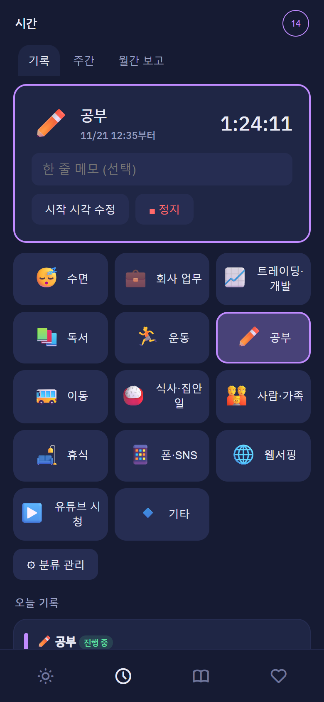
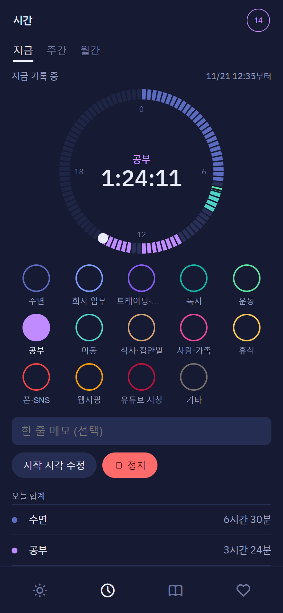
390×844, 가짜 데이터, 시계 고정 2026-11-21(토) 14:00 KST, 다크. 심박은 가짜 값으로 흉내(BLE 코드 그대로). 전 = M1 커밋(95af35a), 후 = M2.
다이얼이 지금까지 채워지고 흰 점 = 지금. 가운데 = 하는 일 + 경과(1초마다). 분류 원 탭 = 전환. 참조에 없는 분류 14개를 다 보여 주려고 5열 격자


오늘 합계(자동 표시) + "오늘 기록 N개 보기"(펼쳐서 하나씩 고치기) + 분류 관리
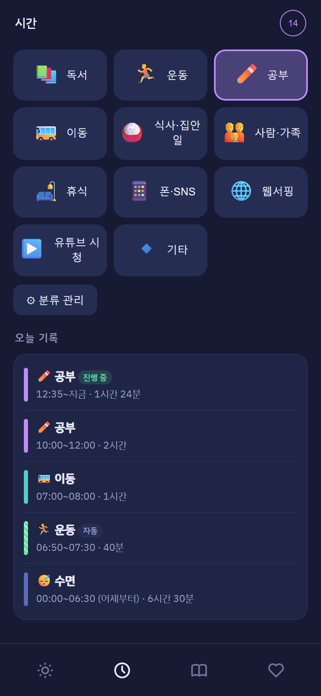
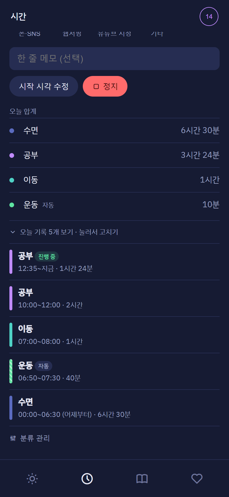
작은 다이얼 7개 → 고른 날의 15분 격자 (편집·채우기·강조 그대로)
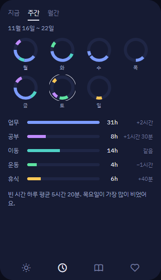
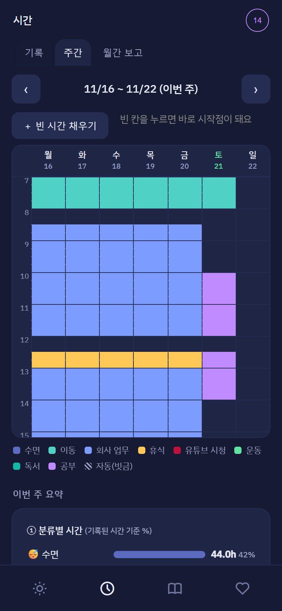
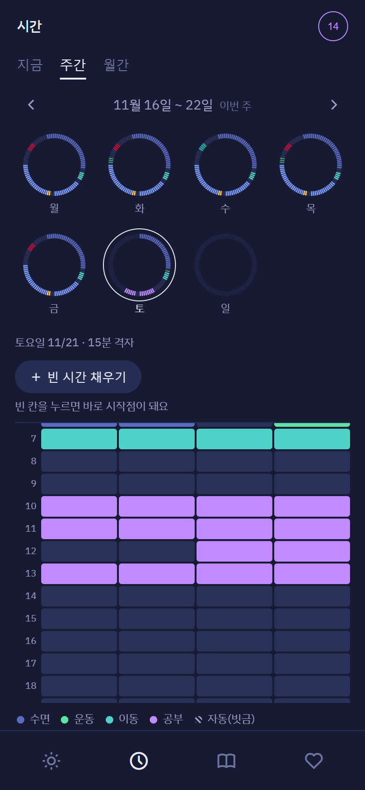
하루 = 24줄 × 4칸. 칸을 누르면 예전과 같은 tlCellTap
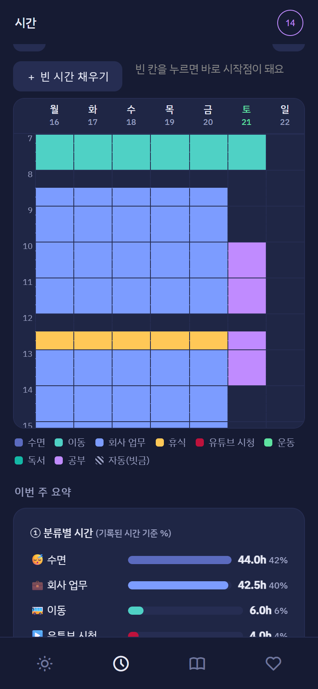
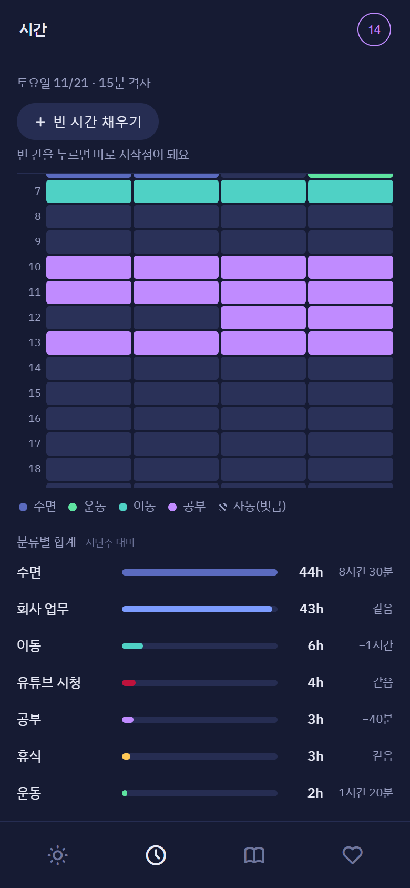
분류별 합계 + 지난주 대비 + 한 줄(가장 많이 빈 날). 중요도·집중·기록률은 접어 둠
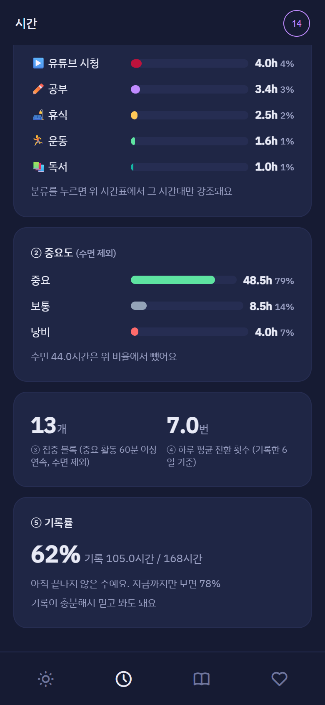
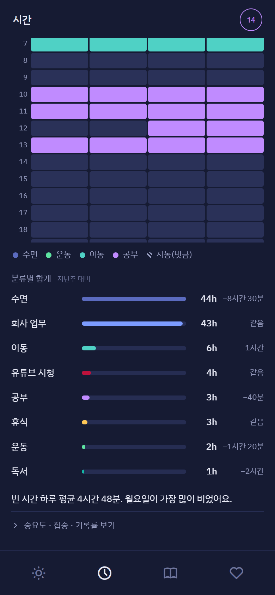
내용 그대로, 카드 대신 머리선 구역
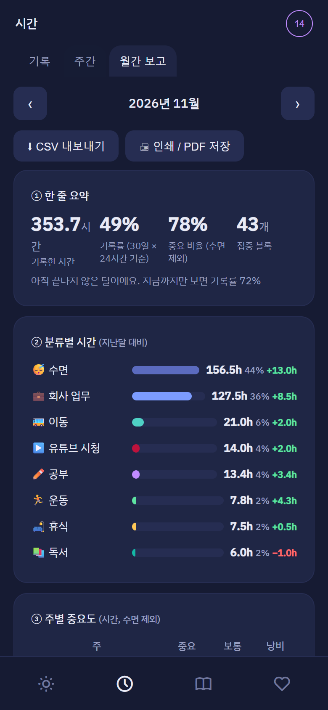

270° 존 게이지 + 지금 심박 점, 큰 BPM, 연결 줄 + 경과, 이번 주 Zone 2, 일시정지(테두리)·끝내기(빨강). 가짜 심박 132
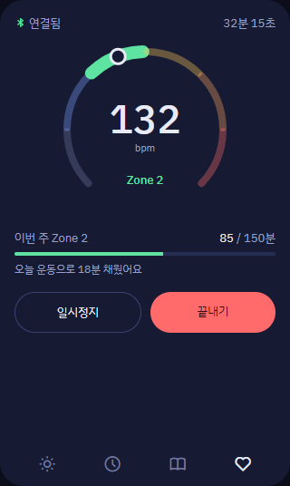
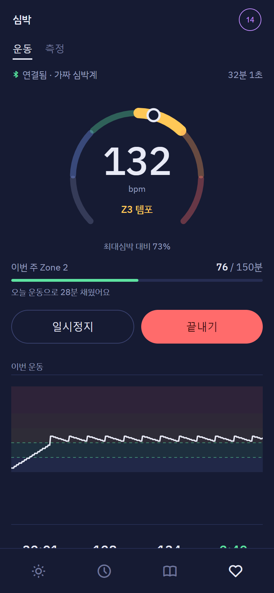
연결 전: 모든 존 흐림, 심박계 연결 버튼


일시정지 → "재개"
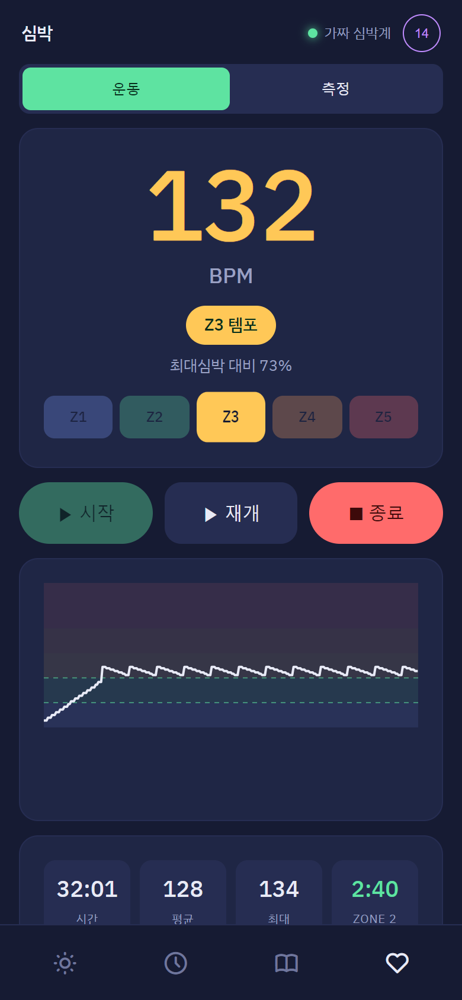
이번 운동: 그래프·통계·구간별 시간
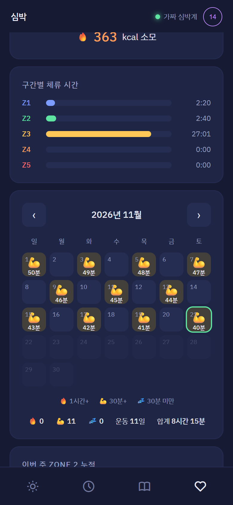
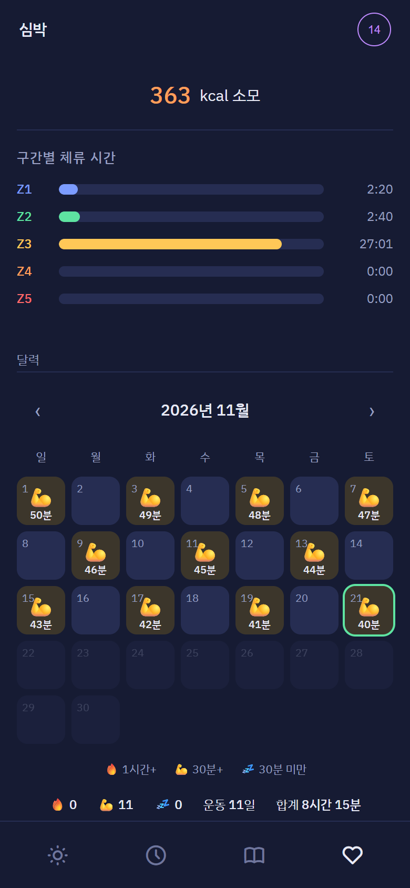
달력 · 이번 주 Zone 2 누적 · 기록
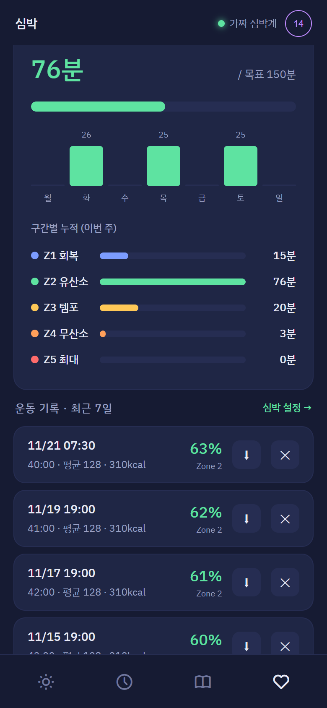
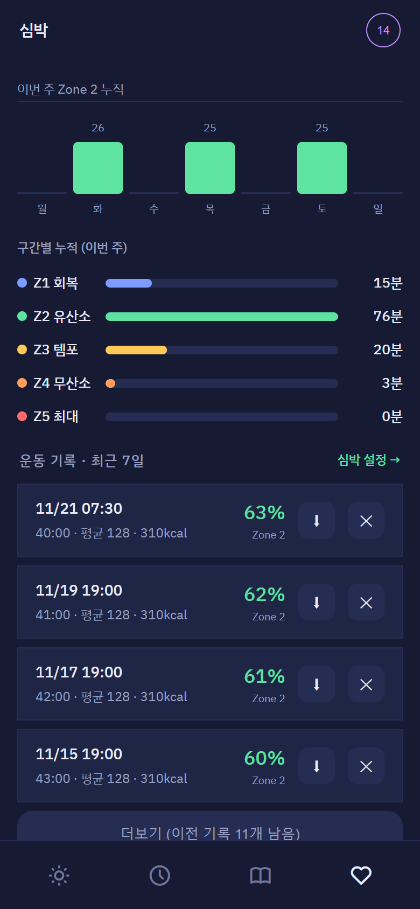
남은 시간을 다이얼 고리로 (앱의 측정은 2분 = 120초)
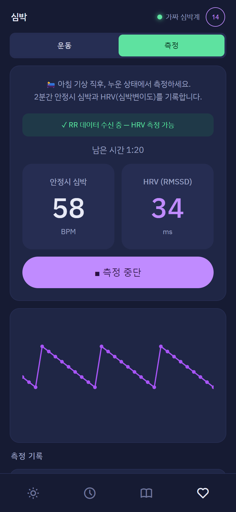
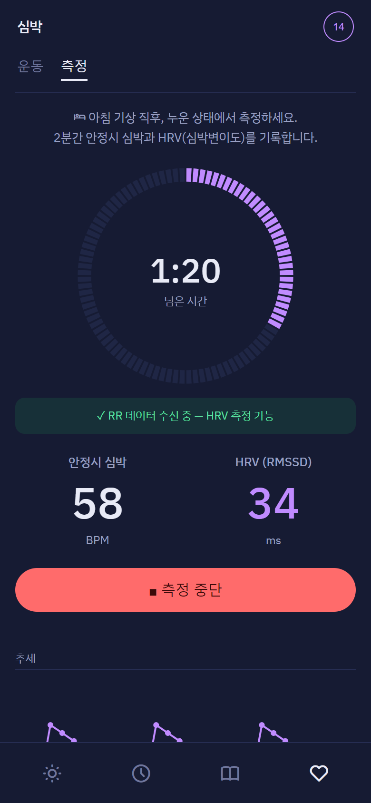